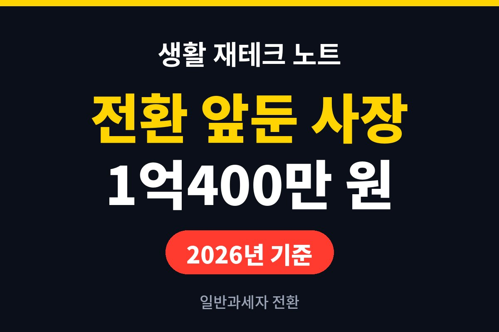
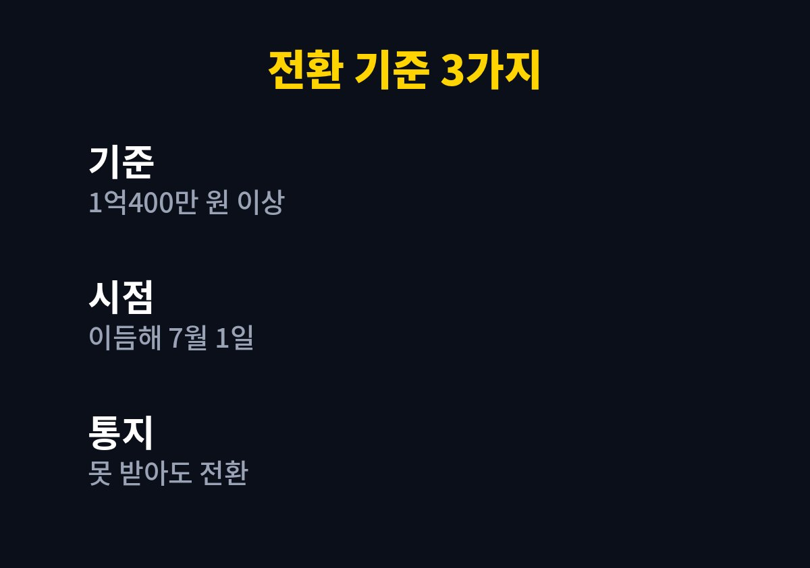

간이과세자 일반과세자 전환은 직전 연도 공급대가 합계가 1억400만 원 이상이면 이듬해 7월 1일부터 적용되는 것이 기본 기준입니다.
2026년 기준으로 올해 매출이 이 선에 가까운 1인 사업자가 지금 확인할 항목을 순서대로 정리했습니다.
연말이 오기 전에 합계를 한 번 내 보면 내년 7월 이후의 부가세 부담을 미리 가늠할 수 있습니다.
기준에 쓰이는 숫자는 매출이 아니라 공급대가입니다.
공급대가는 부가가치세를 포함한 판매 금액이라서 장부에 적은 매출보다 커 보일 수 있습니다.
오픈마켓을 쓰는 셀러라면 정산서에 수수료를 뗀 입금액과 판매 총액이 따로 적혀 있으니, 판매 총액 칸을 기준으로 더해야 합니다.
비교하는 기간은 1월 1일부터 12월 31일까지입니다.
올해 합계가 기준을 넘으면 내년 7월 1일부터 일반과세자가 됩니다.
내년 1월에 바뀌는 것이 아니므로 상반기 분은 지금처럼 간이과세자로 신고합니다.
올해 중간에 사업을 시작했다면 개업일부터 12월 31일까지의 공급대가를 개월 수로 나눈 뒤 12를 곱해 1년치로 환산해 비교합니다.
6개월 치 합계가 6천만 원이라면 환산액은 1억2천만 원이 되어 기준을 넘는 식입니다.
간이과세 배제 업종이나 배제 지역에 해당하면 매출이 작아도 처음부터 일반과세자라는 점도 알아 두어야 합니다.
| 항목 | 간이과세자 | 일반과세자 |
|---|---|---|
| 세율 | 업종별 부가가치율 5~40%에 10%를 곱함 | 10% |
| 신고 | 연 1회(다음 해 1월) | 연 2회(1월·7월) 확정신고 |
| 매입세액 공제 | 매입 공급대가의 0.5% | 매입세액 전액 공제 |
| 증빙 발급 | 연 4,800만 원 미만이면 영수증 중심 | 세금계산서 발급 |

세율만 보고 일반과세가 항상 손해라고 판단하지는 않습니다.
원재료나 상품 매입이 큰 업종은 매입세액을 전액 공제받아 오히려 낼 세금이 줄기도 합니다.
반대로 마진이 높고 매입이 적은 업종은 전환 뒤 납부세액이 눈에 띄게 늘 수 있습니다.
이 순서에서 가장 먼저 막히는 곳은 1번입니다.
카드매출과 현금영수증은 홈택스에 잡히지만 계좌이체나 해외 플랫폼 판매분은 따로 모아야 해서, 한 달 치만 먼저 맞춰 보고 나머지를 같은 방식으로 더하면 시간이 줄어듭니다.
합계가 기준에 한참 못 미치면 이 작업은 내년으로 미뤄도 됩니다.
통지는 알려 주는 절차일 뿐이고, 기준을 넘으면 전환은 자동으로 이루어집니다.
6월 말에 세무서 우편을 열어 보지 못했더라도 7월 1일 거래부터는 일반과세 기준으로 신고해야 합니다.
7월 1일부터 12월 31일까지의 거래는 다음 해 1월에 일반과세자로 신고합니다.
4월과 10월에는 예정고지로 세금이 먼저 부과될 수 있으니 납부할 돈을 별도 통장에 떼어 두는 편이 안전합니다.
공급대가가 1억400만 원에 못 미쳐도 연 4,800만 원 이상이면 간이과세자의 납부 면제는 적용되지 않습니다.
신고 횟수가 늘어 세무대리 비용이 커지는 점은 공식 안내에 잘 나오지 않지만 실제로는 체감되는 부담입니다.
12월 31일 전에 홈택스에서 올해 공급대가 합계를 뽑아 1억400만 원과 비교해 보시기 바랍니다.
기준 근처라면 세무서나 세무사에게 전환 뒤 예상 세액을 물어보는 편이 빠릅니다.
※ 본 글은 2026년 기준 공개 자료를 바탕으로 정리한 정보이며, 세금·금융 상품 선택은 본인 상황에 맞게 전문가와 확인하시길 바랍니다.